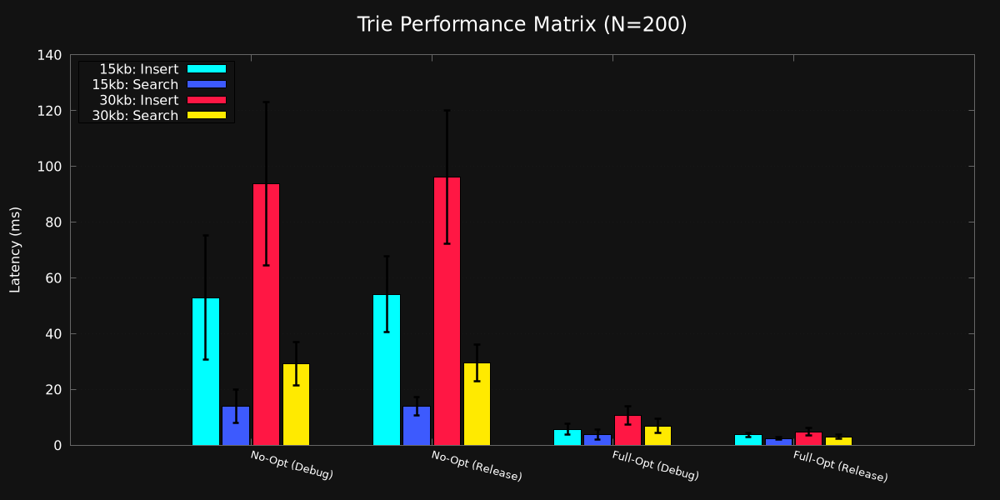

N = 200 Iterations | Stats: Mean, StdDev, Mode

| Configuration | Op | Mean ± StdDev | Mode (rounded) |
|---|---|---|---|
| Dataset: 15kb-word.txt | |||
| No-Opt (Debug) | Insert | 52.911 ms ± 22.239 | Mode: 39.42 ms |
| Search | 14.003 ms ± 6.001 | Mode: 9.03 ms | |
| No-Opt (Release) | Insert | 54.096 ms ± 13.561 | Mode: 38.95 ms |
| Search | 13.973 ms ± 3.270 | Mode: 13.52 ms | |
| Full-Opt (Debug) | Insert | 5.715 ms ± 2.014 | Mode: 4.90 ms |
| Search | 3.871 ms ± 1.737 | Mode: 2.87 ms | |
| Full-Opt (Release) | Insert | 3.722 ms ± 0.765 | Mode: 3.50 ms |
| Search | 2.443 ms ± 0.533 | Mode: 1.98 ms | |
| Dataset: 30kb-word.txt | |||
| No-Opt (Debug) | Insert | 93.740 ms ± 29.321 | Mode: 70.13 ms |
| Search | 29.281 ms ± 7.845 | Mode: 29.63 ms | |
| No-Opt (Release) | Insert | 96.020 ms ± 23.906 | Mode: 85.82 ms |
| Search | 29.508 ms ± 6.454 | Mode: 30.76 ms | |
| Full-Opt (Debug) | Insert | 10.747 ms ± 3.361 | Mode: 8.65 ms |
| Search | 6.923 ms ± 2.579 | Mode: 5.67 ms | |
| Full-Opt (Release) | Insert | 4.831 ms ± 1.311 | Mode: 5.33 ms |
| Search | 3.041 ms ± 0.809 | Mode: 2.34 ms | |